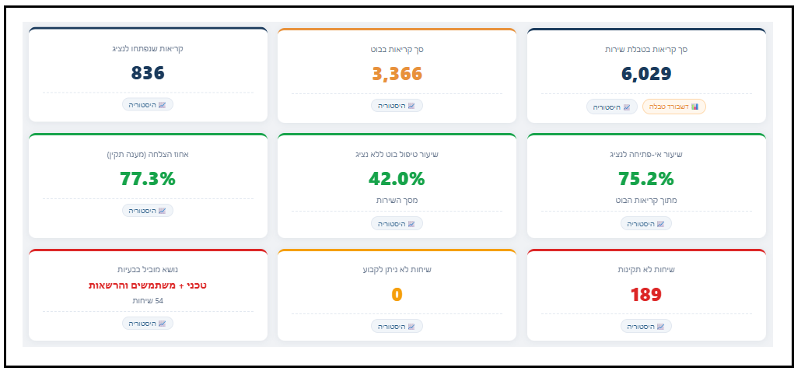

פייפליין של סוכני AI שהופך דאטה גולמית של שירות — שיחות בוט ופניות לקוחות — לדשבורדים ניהוליים: סיווג נושאים, מדדי איכות, מגמות ושיעורי טיפול. במקום ערימת לוגים, תמונת מצב שאפשר להחליט לפיה.

כל סוכן אחראי על שלב: איסוף, סיווג, איכות, מגמות ותצוגה.
כל סוכן מתמחה בשלב — מיצוי הנתונים, סיווג הנושא, ניקוד איכות, זיהוי מגמות ובניית הדשבורד. יחד הם הופכים דאטה גולמית לתובנה ניהולית, אוטומטית ובאופן חוזר.
כל פנייה מתויגת לפי נושא ותת-נושא — כדי לראות על מה באמת פונים.
ניקוד איכות המענה — מה נענה טוב, ואיפה השירות נופל.
זיהוי עליות, ירידות ודפוסים — מה משתנה ומתי.
שיעור הטיפול בבוט לבד מול העברה לנציג — לצמצום עומס.
סימון פניות תקועות, כשלים חוזרים ונושאים מוכי-בעיות.
כל התובנות בכרטיסי KPI צבעוניים וברורים — מוכן להחלטה.
הפייפליין רץ על נתוני דוגמה ומייצר את הדשבורד המלא בזמן אמת. אותה גישה מתחברת גם למקורות שירות אמיתיים — בוט, מוקד או CRM.
אפשר לחבר פייפליין כמו Bot Analytics לדאטה שלכם ולקבל דשבורד ניהולי שמראה מה קורה באמת. דברו איתי ונבנה את זה סביב הצורך.